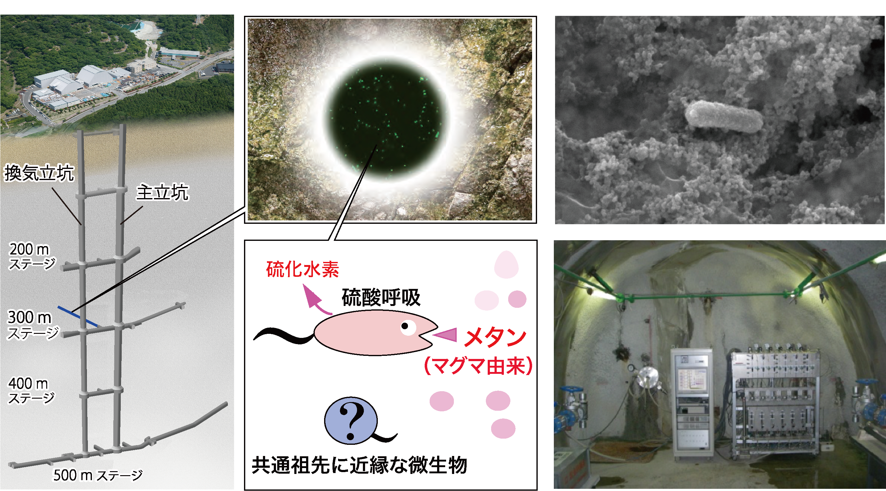

プロジェクト内容
要約
花崗岩（御影石）は地下深部でマグマがゆっくり冷えて固まってできる岩石で、大陸の地殻を構成する岩石として一般的で世界各地にみられます。40億年前から存在が知られている花崗岩は有機物や酸素のような生命にとってのエネルギー源が乏しいため、花崗岩深部には生態系は存在しないと考えられていました。これまでの私たちの研究から、深度300 メートルの花崗岩から採取した地下水に、マグマ由来のメタンをエネルギー源にする微生物が存在することが明らかとなってきました。この光合成由来のエネルギー源に依存しない微生物は、光合成生物誕生前の太古の地球に生息していた共通祖先の微生物と類似した微生物と考えられ、その生態を明らかにすることで、今後、始原生物の生態の解明や古環境の復元に役立つと考えられます。

図. 瑞浪超深地層研究所用地内に建設された大型地下研究施設のレイアウト図（左）。 深度300メートルの掘削孔（右下の写真）から採取した地下水を用いて研究が行われ、マグマ由来のメタンをエネルギー源にして硫化水素を発生する微生物と共通祖先に近縁な微生物が生息することが明らかとなった。
なぜ地下微生物を研究するのか
光合成により生産された有機物と酸素に満ちた地上とは異なり、地底は生物に必要な栄養素が欠乏しているため生命の存在しない「死の世界」と考えられてきました。一方、マグマから形成される岩石は地底の土台を構成し、岩石中には鉄分が多く含まれる場合、鉄分と水が反応して水素が発生し、水素をエネルギー源とした化学合成に基づく地底生態系が存在する説も提唱されています。しかし、その実態については不明な点が多く、鉄分に乏しい花崗岩中では、光合成由来のエネルギーが表層から届かない場合は、微生物生態系は存在しないと考えられてきました。
地球初期の表層と現在の花崗岩の地下深部は、微生物の生息環境が類似していると推測され、地底深部の大部分を占める花崗岩中にも生態系が広がっているならば、太古の花崗岩中でも生命活動は行われており、現在花崗岩深部の微生物の生態から始原生物のと考えられます。
研究の意義
地下深部に生息する微生物の存在は知られていましたが、地上からの掘削による採取では地表の有機物が汚染されるため採取が難しいこと、地下の実際の環境と同じように室内培養を行うことが難しいことから、その実態は謎のままでした。そこで私たちは、地下深部から水平に掘削し採取した地下水中の微生物について、DNA解析を行い、エネルギー源は何かその代謝様式の解明を行っています。また今後は現場で地下微生物を培養を行うことで地下環境中での微生物の役割を明らかにし、その知見が始原生物と古環境の解明に繋がると考えています。
研究費支援のお願い
生命の起源を解明するためには、異なる深度の微生物や地表の微生物の汚染を避け、地下深部に実際に生息している微生物を採取しなければなりません。そのため、そのような純粋な微生物の採取には地上からの掘削ではなく地下からの掘削、そして酸素がない状態でのサンプリングが重要です。ボーリング孔の掘削や、酸素に触れないようなサンプリング、持ち帰ったサンプルを使った実験にはお金がかかります。そこで、皆さんにご支援をいただきたいと考え、今回のプロジェクトを立ち上げました。
研究計画
| 2018年6月 |
クラウドファンディング挑戦
|
| 2018年7月 |
サンプリングと解析開始
|
| 2019年3月 |
国際会議にて研究発表
|
リターンの詳細
1,000円
1. 地下微生物の電子顕微鏡写真ポストカード5枚とお礼のメッセージ
現在10名が支援しています
5,000円
1. 地下微生物の系統樹or地質図のポスター
2. 地下微生物の電子顕微鏡写真ポストカード5枚とお礼のメッセージ
現在10名が支援しています
10,000円
1. 特別講演招待チケット
2. 地下微生物の系統樹or地質図のポスター
3. 地下微生物の電子顕微鏡写真ポストカード5枚とお礼のメッセージ
現在2名が支援しています
(注)特別講演は2018年8月に開催予定ですが、当日お越しいただけない支援者の方々には、講演の様子を録画した動画を
Youtubeにて限定配信する予定です。
30,000円
1. 国際会議での発表および論文の謝辞にお名前掲載
2. 特別講演招待チケット
3. 地下微生物の系統樹or地質図のポスター
4. 地下微生物の電子顕微鏡写真ポストカード5枚とお礼のメッセージ
現在2名が支援しています
50,000円
1. 東京大学鈴木研究室見学ツアーと微生物標本作成体験
2. 国際会議での発表および論文の謝辞にお名前掲載
3. 特別講演招待チケット
4. 地下微生物の系統樹or地質図のポスター
5. 地下微生物の電子顕微鏡写真ポストカード5枚とお礼のメッセージ
現在2名が支援しています (限定10名)
(注)東京大学鈴木研究室見学ツアーは東京大学本郷キャンパスにて行います。
現地までの交通費および宿泊費は支援金額に含まれておりませんので別途ご負担していただくことになります。何卒ご了承ください。
100,000円
1. 鈴木先生と地下300m体験ツアー
2. 東京大学鈴木研究室見学ツアーと微生物標本作成体験
3. 国際会議での発表および論文の謝辞にお名前掲載
4. 特別講演招待チケット
5. 地下微生物の系統樹or地質図のポスター
6. 地下微生物の電子顕微鏡写真ポストカード5枚とお礼のメッセージ
現在1名が支援しています (限定10名)
(注)地下300 mツアーは岐阜県瑞浪市の瑞浪超深地層研究所にて行います。
地下施設に入坑の際は安全装置（つなぎ服、反射ベスト、ヘルメット、安全長靴、軍手）を着用していただきます。
一部、狭い場所、急な階段がございます。詳しい注意事項は日本原子力研究開発機構のサイトよりご確認ください。
現地までの交通費および宿泊費は支援金額に含まれておりませんので別途ご負担していただくことになります。何卒ご了承ください。